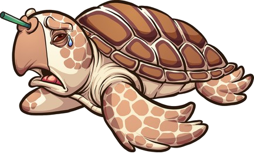

<div class="intro-container">
  <p>Plastic has always been a problem but it mainly became an issue when a turtle was found with a straw stuck in it’s nose. One of the most effective ways to eliminate plastic is to start slowely and gradually reform. Start with eliminating plastic straws</p>
  
</div> 